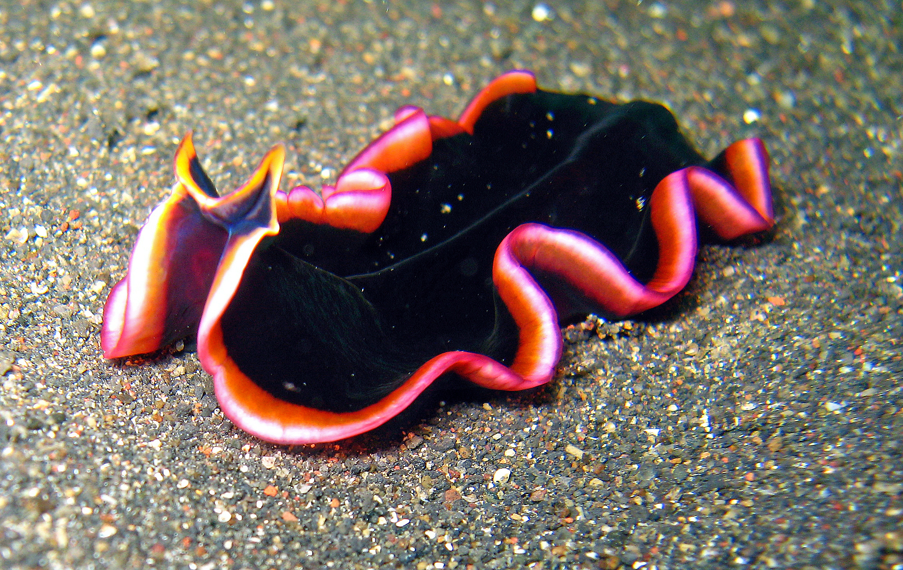
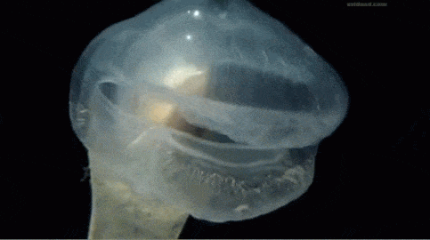
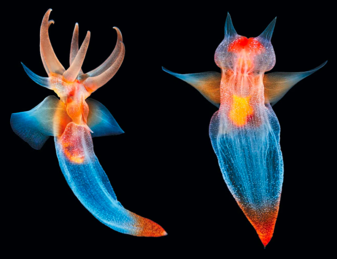
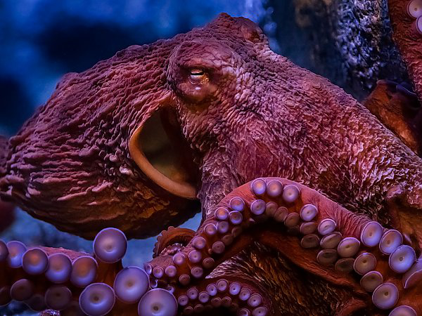
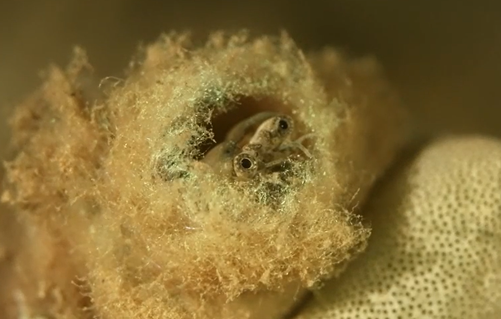
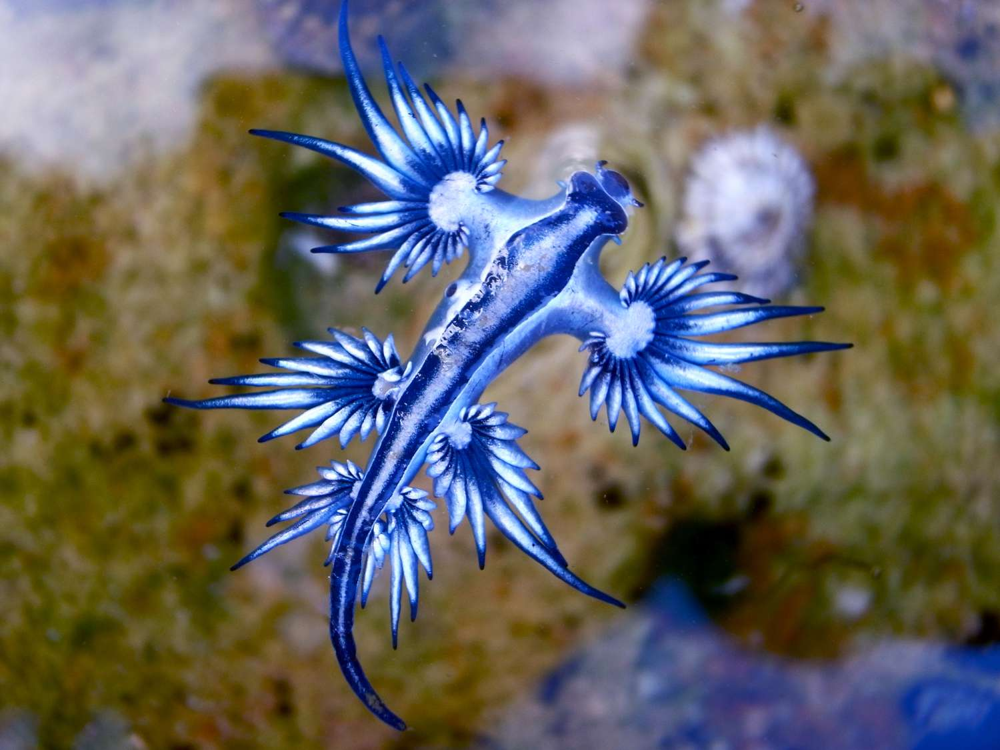
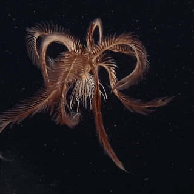
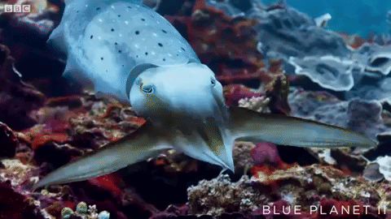
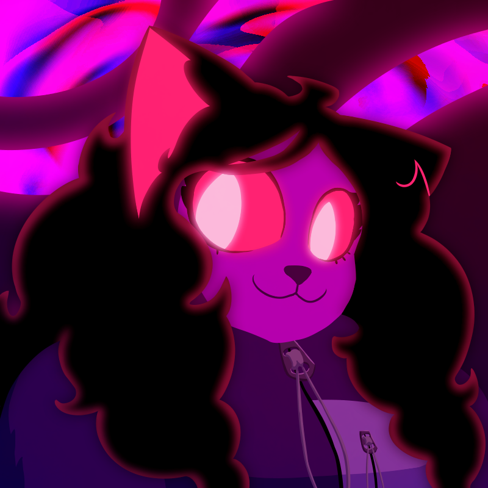

Hello! my name is Kat (she/her, it/its). At the time of writing this, I am a student at UCSC majoring in Art and Design: Games and Playable media, and will (hopefully) be graduating in 2027. I primarily consider myself a 2D artist, though I have dabbled with 3D modeling software. I mainly focus on character design, though I do draw landscapes on occasion. Although not something I am actively studying, I am quite fond of marine biology, with marine invertebrates being one of my favorite categories of animal. Lower down on this page you can find a list of some of my favorites!








